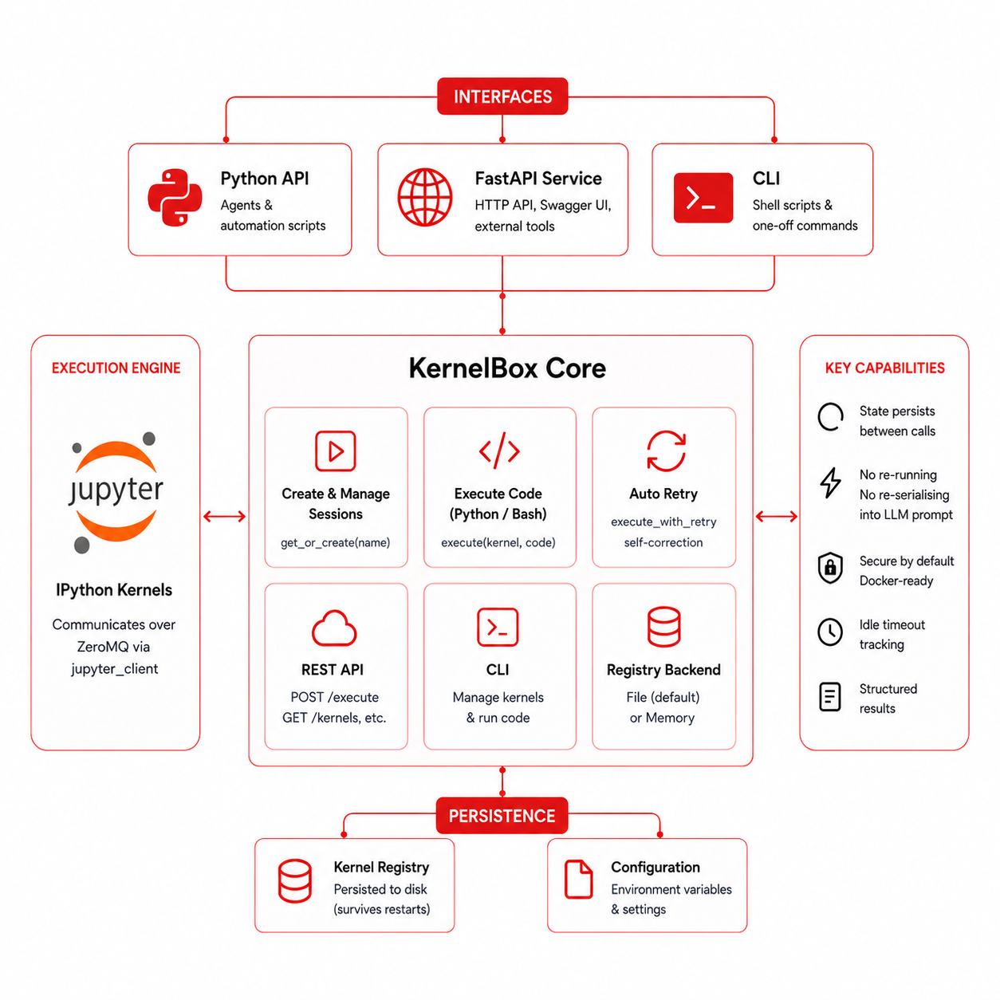

KernelBox¶
Persistent IPython kernels for agents, scripts, and tools — no notebook server required.
KernelBox talks directly to IPython kernels over ZeroMQ through jupyter_client. It gives your agent a persistent Python session it can hold open, run code in, and read structured results from — without spinning up a full Jupyter server.
The 30-second pitch¶
from kernelbox import get_or_create, execute, destroy
kernel = get_or_create("demo")
# Step 1 — load data
execute(kernel, "numbers = [1, 2, 3, 4, 5]")
# Step 2 — the kernel still remembers `numbers`
result = execute(kernel, "sum(numbers)")
print(result.return_value) # 15
destroy("demo")
State persists between calls. No re-running. No re-serialising into the LLM prompt.
Pick your interface¶
| Interface | Best for |
|---|---|
| Python API | Writing agents or automation scripts |
| FastAPI service | HTTP endpoints, Swagger UI, external tools |
| CLI | Shell scripts, quick one-off commands |
What it does¶
-
Creates and manages named kernel sessions —
get_or_create("name")returns a live kernel, creating it if needed. -
Executes Python or Bash code —
execute(kernel, code)runs the code and returns a rich structured result. -
Retries failing code automatically —
execute_with_retrycalls your repair function after each failure so your agent can self-correct. -
Exposes a full REST API — the FastAPI server gives you
POST /sessions/{name}/execute,GET /kernels, and more. -
Works from the terminal — the
kernelboxCLI manages kernels and executes code with JSON output, easy to pipe intojq. -
Persists kernel registry to disk — the file backend survives server restarts; swap to memory backend for ephemeral use.
-
Runs securely in Docker — the included
docker-compose.ymluses a non-root user, read-only filesystem, and tmpfs scratch space.
Assumptions & Current Limitations¶
Know these before going to production
These are known constraints in v0.1.0. Understanding them will help you deploy safely.
| Area | Behaviour in v0.1.0 |
|---|---|
| Sandboxing | Kernels run with the same OS privileges as the calling process. Use the included Docker setup for isolation. |
| Authentication | The FastAPI server has no auth. Bind to 127.0.0.1 or place behind a reverse proxy. |
| Concurrency | File registry is not safe for heavy concurrent writes from multiple processes. |
| Idle kernel cleanup | KernelBox tracks idle timeout in metadata but does not automatically kill idle kernels. |
| Output truncation | stdout/stderr is cut at KERNELBOX_OUTPUT_CHAR_LIMIT (default 10 000 chars). Check result.truncated. |
| Bash execution | Bash runs through IPython's %%bash magic — not a real shell. Path and env may differ. |
| Windows ACL | The Windows ACL restriction for Jupyter connection files is patched. Connection files may be world-readable. |
| Kernel types | Only the python3 kernelspec is tested. Other kernelspecs may work but are unsupported. |
Where to go next¶
| Setup | Install and run for the first time |
| Python API | Full walkthrough with all return fields |
| HTTP API | curl examples and Swagger UI |
| CLI | Terminal commands and JSON output |
| Configuration | All environment variables |
| Security | Read before production |